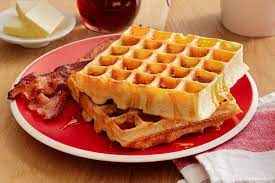

Homemade waffles

Wake up on the right side of the bed with this top-rated waffle recipe.
Ingredients
- Eggs
- Flour
- Milk
- Sugar
- Oil
- Baking powder
- Salt
- Vanilla
- Cooking spray
How to Make Waffles Step-By-Step
- Make the batter: Whisk the eggs, then add the flour, milk, and oil. Whisk in the sugar. Stir in the remaining ingredients.
- Make the waffles: Pour the batter onto the hot, prepared waffle iron. Cook until golden brown and repeat with the remaining batter.